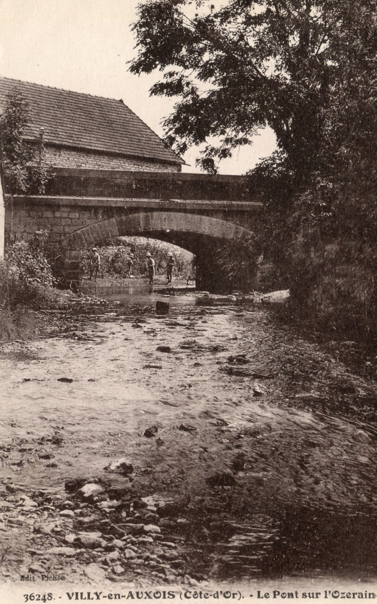

Soirée festive le 7 juillet 2023
Présentation du projet de film « Morte de Rire »
Projection de 3 courts-métrages
Discussions avec les habitant-es de Villy et des alentours, sur la fabrication du film et les différentes manières d’y participer
Concerts et soirée dansante !
Buvette et petite restauration
(pizzas au feu de bois et assiette malgache)
Infos pratiques
Lieu de l'évènement : La SCIE, Salle des fêtes de Villy-en-Auxois
À partir de 18h

Morte de rire
Fiction / Fantastique / 30 minutes
Injustement assassinée en 1723, une lavandière revient hanter les villageois-e-s de Villy-en-Auxois...
Tournage prévu entre le 15 septembre et le 15 octobre 2023 à Villy-en-Auxois